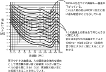

2026年
問題34 音・低周波・騒音とその影響に関する次の記述のうち，最も不適当なものはどれか．
(1)騒音の測定において用いられるA特性は，ヒトの耳の感度に近い特性を組み込んでいる
(2)胃の働きの抑制は，騒音の健康影響の一つとして知られている．
(3)等価騒音レベルが90dBであるような職場で長期間働くと，騒音性難聴が起こりやすい．
(4)低周波音曝ばく露によって現れる症状には，不快感や圧迫感などがある．
(5)大きく高い騒音に一時的に曝露されることによる聴力の低下を，一過性聴力闘いき値低下という．
2026年
問題34 正解（5） 頻出度AAA
一過性聴力閾値低下 ⇛ 一過性聴力閾値上昇（大きな音でないと聞こえなくなる）が正しい．
騒音による一時的な聴力低下をTTS（Temporal Threshold Shift：一過性閾値上昇）といい，永久性難聴（永続性閾値変化）をPTS（Permanent Threshold Shift）という．
TTSは，静穏な環境で回復するが，騒音が繰り返され，長期に及ぶとPTSに移行してしまうことが起こる．
騒音による永久性難聴の程度や進行具合には，個人差が大きい．
WHOの環境騒音ガイドラインでは，一般の環境騒音では，1日の曝露騒音として24時間等価騒音レベル（LAeq24h）※が70dB未満であれば，騒音による永久性の聴力障害はほとんど起こらないとされる．
※ 24時間等価騒音レベル（LAeq24h） 24時間にわたって時間的に変動する騒音レベルをエネルギー的に等価な定常騒音レベルで表した量．
-(1) 騒音の測定において用いられるA特性（A特性音圧レベル）
音の物理的な強さは音の伝わる方向に対して垂直な単位面積を単位時間に通過する音のエネルギーなので，単位はW（ワット）/m2である．人間の耳の可聴範囲はエネルギー的には約10-12W/m2から最大102W/m2であって，その範囲は14桁に及ぶ．
ある基準値との比の対数をとって量を表示することをレベル表示（デシベル尺度）という．
考察の対象とする量が数十桁にわたり，そのままでは扱いにくい場合にレベル表示が用いられる．これを音に用いて，音響工学では音のパワーレベルを次のように定義している． \[L_i=10\log_{10}\frac{I}{I_0}\]
ただし，\(L_i\)：音の強さのレベル［dB］，\(I\)：音の強さ［W/m2］，\(I_0\)：基準の音の強さ（10-12W/m2）．
上記の可聴範囲（10-12W/m2～最大102W/m2）をレベル表示すると， \begin{align} L_i{\rm （最小）} & = 10\log_{10} \frac{I}{I_0} \notag\\[5pt] &=10\log_{10} \frac{10^{-12}}{10^{-12}} \notag\\[5pt] &=10\log_{10}1=0\ {\rm dB} \notag \end{align} \begin{align} L_i{\rm （最大）} & = 10\log_{10} \frac{I}{I_0} \notag\\[5pt] &=10\log_{10} \frac{10^2}{10^{-12}} \notag\\[5pt] &=10\log_{10}10^{14}=140\ {\rm dB} \notag \end{align}
レベル表示により，最小と最大値で1012～102と14桁もの開きがあったものが0～140dBと3桁で表現できることになる．
実際に音の強さを測定する場合は，エネルギーを直接測定することが難しいので，音圧\(p\)［Pa］を測定する．
音の強さは，空気の密度を\(\rho\)：［kg/m3］，音速を\(c\)：とすると，次式で表される． \[I=\frac{p^2}{\rho c}\]
すなわち，音の強さは，音圧の2乗に比例するので，音圧レベルを次のように定義すると，同じ音に対して強さのレベルと音圧レベルが一致することになる． \begin{align} L_p & = 10\log_{10} \left (\frac{p}{p_0} \right) \notag\\[5pt] &=2 \times \log_{10} \frac{p}{p_0} \notag\\[5pt] &=20\log_{10} \frac{p}{p_0} \notag \end{align}
ただし，\(L_p\)：音圧レベル［dB］，\(p\)：音圧［Pa］，\(p_0\)：基準の音圧（2×10-5Pa=基準の音の強さ10-12W/m2に相当）．
例えば2Paの音圧レベルは， \begin{align} &20\log_{10} \frac{2}{2 \times 10^{-5}} \notag\\[5pt] &=20 \times \log_{10}10^5 \notag\\[5pt] &=20\times 5 =100\ {\rm dB} \notag \end{align}
さらに，この音圧レベルを，人の聴覚の周波数特性を表した等ラウドネス曲線（2026-34-1図）によって補正した音圧レベルをA特性音圧レベルといい，単なる音圧レベルと区別するために，単位に［dB(A)］を用いる．騒音計のA特性音圧レンジで計測した騒音レベル［dB(A)］は騒音の評価の基本となる．
2026-34-1図 等ラウドネス曲線
